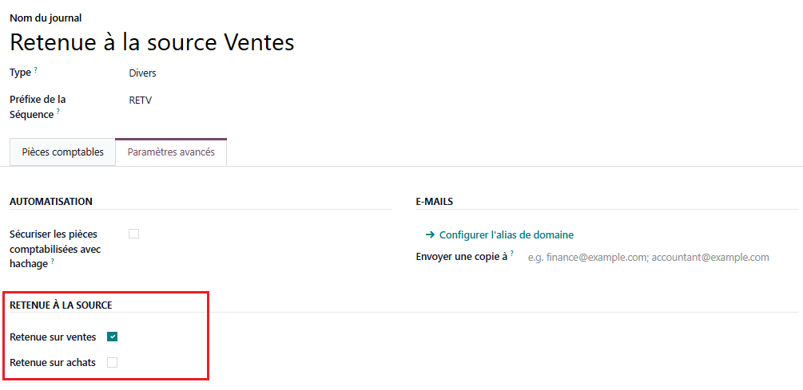
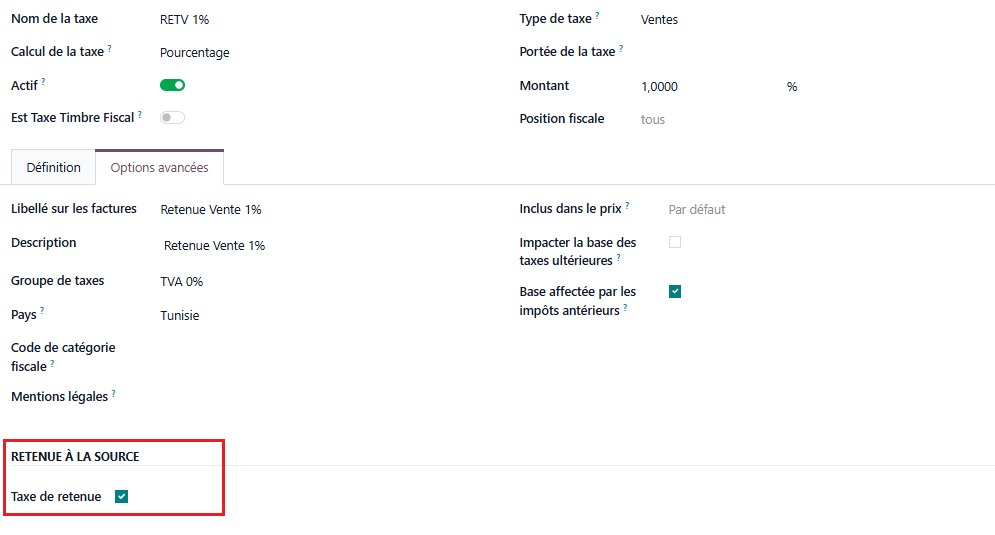
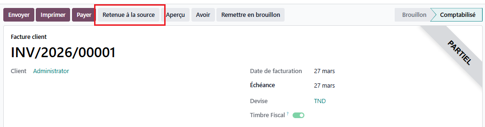
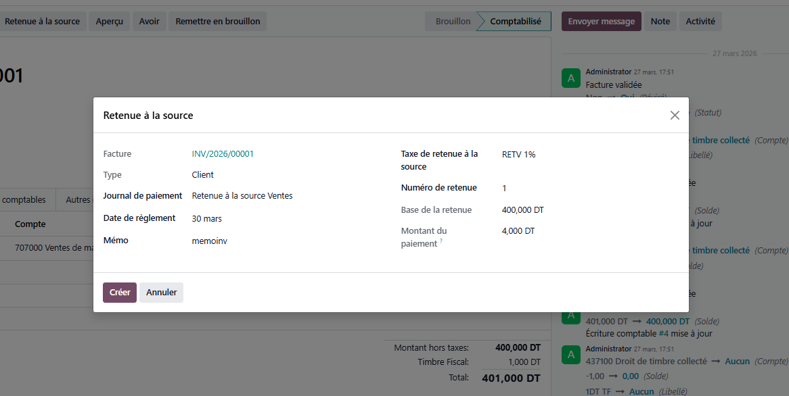

Step 3 - WHT Document
After validation, the Withholding Tax document is created and set to posted. It contains all withholding information along with a link to the generated journal entry.

This module allows you to manage withholding tax on your customer and vendor invoices directly in Odoo. When a withholding is created, the module automatically generates a dedicated journal entry and reconciles it with the invoice.
This module is compliant with Tunisian tax regulations (Direction Générale des Impôts) and follows the local accounting standards in force.
Developed by Digi-IT
In Accounting > Journals, open the relevant journal and enable Withholding Sales (customers) or Withholding Purchases (vendors) depending on the desired flow.
The journal must also have a Default Account so that the withholding entry can be generated.

In Accounting > Taxes, enable Retenu Tax on the relevant tax and verify that the Tax Type matches the flow: sale for customers, purchase for vendors.
The calculation is designed for percentage taxes (amount_type = percent).

Open a customer or vendor invoice that is posted and unpaid, with no existing withholding. The Withholding Tax button is available directly from the invoice header.

The wizard displays automatically filtered lists based on the invoice type: authorized journal, compatible tax. Enter the withholding number, the payment date, and an optional memo.

After validation, the Withholding Tax document is created and set to posted. It contains all withholding information along with a link to the generated journal entry.
The Withholding Entry is created, posted, and reconciled with the invoice in a single action. No additional manual input is required.

Before first use:
1. Enable the Withholding flag on the relevant journals and verify the default account.
2. Enable Retenu Tax on withholding taxes and verify the tax type.
3. Create your first withholding from a posted and unpaid invoice.
Odoo 19.0
For any support, contact us:
contact@digi-it.com.tn